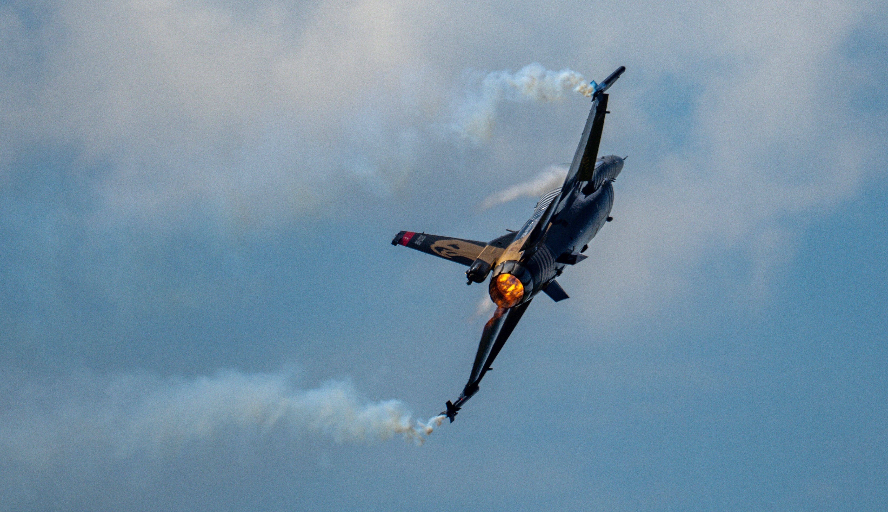

Die F-16, auch bekannt als Fighting Falcon, wurde in den 1970er Jahren von General Dynamics (heute Lockheed Martin) entwickelt. Sie wurde als kostengünstiges Mehrzweckkampfflugzeug konzipiert. Die erste Version flog 1974 und wurde 1978 von der US-Luftwaffe eingeführt. Aufgrund ihrer Leistungsfähigkeit und des niedrigeren Preises wurde die F-16 zu einem internationalen Erfolg und von über 25 Ländern erworben. Im Laufe der Zeit wurde sie kontinuierlich verbessert und modernisiert, um den sich ändernden Anforderungen gerecht zu werden. Die F-16 ist für ihre Vielseitigkeit, Wendigkeit und Einsatzbilanz in Luft- und Bodenangriffen bekannt und bleibt ein wichtiges Kampfflugzeug in vielen Luftstreitkräften weltweit.
